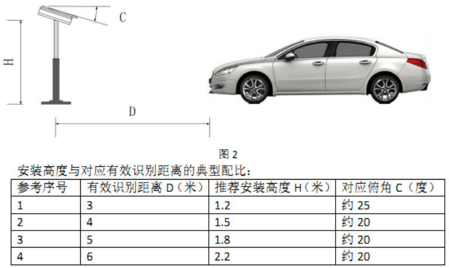
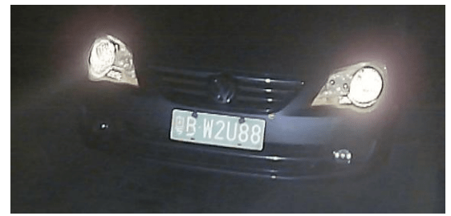
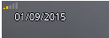
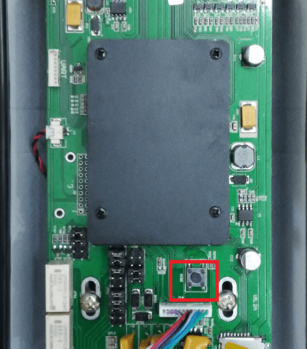
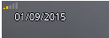
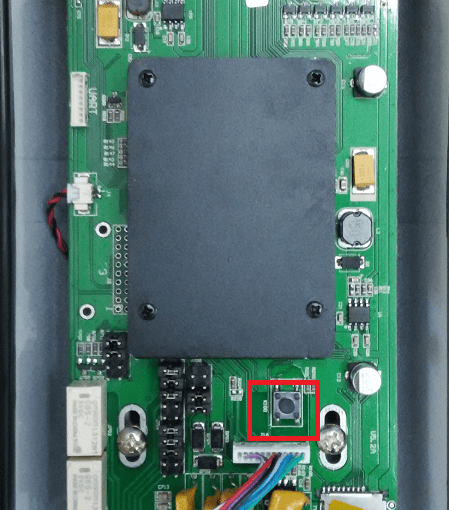

摄像机安装和调试技巧
1.现场安装
推荐摄像机安装在道闸的前面,尽量避免起落杆遮挡画面影响车牌的识别,摄像机建议采用高杆安装方式,离地面
1.4米以上,俯角在15~40,同时加装一个三维万向节.
三维万向节如图:
 我司设备出厂已配置万向节.
现场总体布局可参考下图:
我司设备出厂已配置万向节.
现场总体布局可参考下图:

2.摄像机安装的高度
对小区,商场等以小车为主的停车场,安装高度推荐在1.4m至1.7m之间;
对以大货车为主的场地,如地磅等,车牌位置较高,此时安装高度推荐在1.6m至2m之间;

3.虚拟线圈的设置
在IE网页端的"安装引导"上进行绘制,确保虚拟线圈绘制在视频画面的下半部分,务必确保所有来车的车牌都
能触碰到虚拟线圈,以此来确定虚拟线圈的宽度;
虚拟线圈下边缘的线可以拉到视频画面的底部,以此来确定虚拟线圈的高度.
如图:

4.车牌成像的要求:大小和水平
车牌成像的像素值推荐在140~160之间,能够达到最佳识别率,或者车牌在视频画面的宽度占视频画面宽度
的1/8~1/9最佳,最直观的调试方式,车牌在虚拟线圈区域的大小和蓝色虚拟车牌尺寸相当.
调试方式:
 同时加装一个三维万向节.调节好摄像机的视角,尽量保持车牌水平.避免出现车牌左高右低或者左低右高的
情况.如
同时加装一个三维万向节.调节好摄像机的视角,尽量保持车牌水平.避免出现车牌左高右低或者左低右高的
情况.如 ,出现此类效果会影响识别率.
最佳的效果可以参考:
,出现此类效果会影响识别率.
最佳的效果可以参考: .
.
5.识别区域的设置
在IE网页端的"安装引导"上进行绘制,把车牌的在画面上的有效运动范围都包含进来.
注意:所有现场都必须画上识别区域!
如图:
 绿色线圈即为识别区域;红色线圈即为虚拟线圈.
绿色线圈即为识别区域;红色线圈即为虚拟线圈.
6.外置补光灯的要求
外置补光灯推荐采用白色LED补光灯,20~30W,聚光性质,防水等级IP65,可向我司购买.
安装要求:安装高度要和摄像机保持在0.5米~0.7米的距离,外置补光灯的亮斑直接打在车牌或者车牌偏下一
点,可以根据车牌过曝情况做微调,比如摄像机离地面高度1.6米,补光灯装在同一根立柱0.9米~1.1米高;
注意:特别需要避免与以下外置补光灯错误的安装情形.
外置补光灯与摄像机的安装距离过近,如下图:
两者的安装距离小于30cm,补光灯的光线会直接被车牌表面的反光涂层反射到镜头,导致车牌在视频图像中过曝,
显得发白,影响最终的识别效果.
 注意:请确保外置补光灯的安装位置到摄像机的垂直距离保持在50cm以上.
注意:请确保外置补光灯的安装位置到摄像机的垂直距离保持在50cm以上.
7.摄像机内置补光灯的设置
内置补光灯过亮,会造成过曝,如下图:

此时应酌情降低内置补光灯的亮度等级.
摄像机内置补光灯一般设置为等级1~3级,具体视曝光情况做调整;
注意:内置补光灯仅用于照亮车牌,而不适于对环境进行补光!
8.后期维护问答
(1)摄像机视频画面很卡,延迟很高,有什么诊断方式吗?
答:在IE网页端"实时视频"视频画面的左上角有一个类似手机信号的图标,如果图标是绿色的,
如图: 就表示网络通畅;
如果是红色或者黄色,如图: 就表示网络传输质量有问题,需要改善网络传输质量,建议换个
交换机的网口或者重启交换机.
(2)摄像机内置的4个LED灯白天也亮着,能否关闭?
答:摄像机内置的4个LED灯的开关出厂时默认是由算法进行控制的,当发现成像光线不足时会自动开启,如果需要
强制它的开关,可以通过提供的调试关闭.
(3)摄像机是否提供了复位功能?
答:摄像机的主板上有一个硬件复位按钮,按住它直到前面的4个LED灯闪烁2次再松手,此时摄像机重启后所有设置
都被恢复到出厂设置,IP恢复为192.168.1.100.
如图:

红色部分就是硬件复位按钮.
(4)摄像机找不到IP地址,连不上了,怎么办?
答:提供了摄像机配置工具或者调试工具,可以用来搜索摄像机IP.
就表示网络通畅;
如果是红色或者黄色,如图: 就表示网络传输质量有问题,需要改善网络传输质量,建议换个
交换机的网口或者重启交换机.
(2)摄像机内置的4个LED灯白天也亮着,能否关闭?
答:摄像机内置的4个LED灯的开关出厂时默认是由算法进行控制的,当发现成像光线不足时会自动开启,如果需要
强制它的开关,可以通过提供的调试关闭.
(3)摄像机是否提供了复位功能?
答:摄像机的主板上有一个硬件复位按钮,按住它直到前面的4个LED灯闪烁2次再松手,此时摄像机重启后所有设置
都被恢复到出厂设置,IP恢复为192.168.1.100.
如图:

红色部分就是硬件复位按钮.
(4)摄像机找不到IP地址,连不上了,怎么办?
答:提供了摄像机配置工具或者调试工具,可以用来搜索摄像机IP.